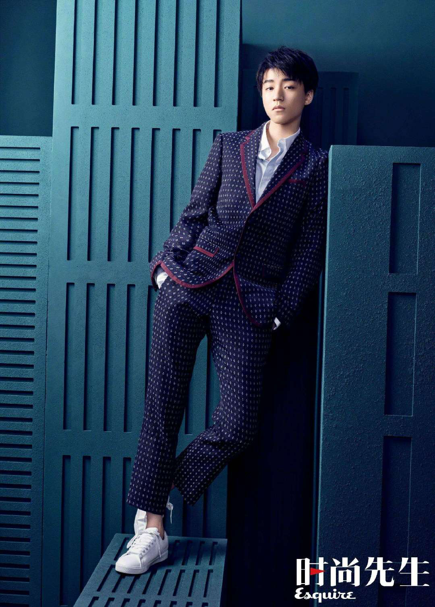

主要演员

孙俪
饰演 甄嬛
中国著名女演员，凭借此剧获得多个重要奖项。她将甄嬛的聪慧、坚韧与柔情完美诠释。

陈建斌
饰演 雍正帝
实力派男演员，完美诠释了雍正帝的威严与柔情。他的表演让这个历史人物更加立体。
蒋欣
饰演 华妃
优秀女演员，将华妃的狠辣与悲情演绎得淋漓尽致。她的表演让这个角色深入人心。
中国著名女演员，凭借此剧获得多个重要奖项。她将甄嬛的聪慧、坚韧与柔情完美诠释。
实力派男演员，完美诠释了雍正帝的威严与柔情。他的表演让这个历史人物更加立体。
优秀女演员，将华妃的狠辣与悲情演绎得淋漓尽致。她的表演让这个角色深入人心。